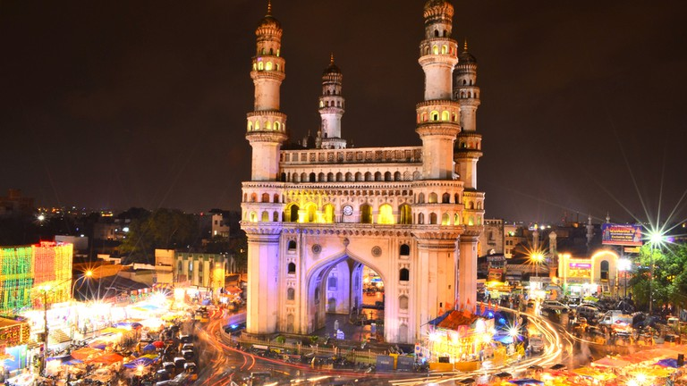
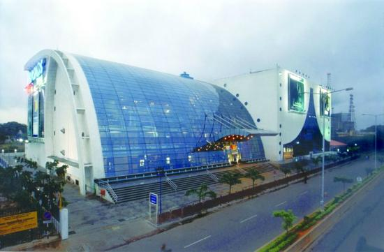

According to John Everett-Heath, the author of Oxford Concise Dictionary of World Place Names, Hyderabad means "Haydar's city" or "lion city", from haydar (lion) and ābād (city), and was named to honour the Caliph Ali Ibn Abi Talib, who was also known as Haydar because of his lion-like valour in battles.[2] Andrew Petersen, a scholar of Islamic architecture, says the city was originally called Baghnagar (city of gardens).[3] One popular theory suggests that the founder of the city, Muhammad Quli Qutb Shah of the Golconda Sultanate, named it after Bhagmati, a local nautch (dancing) girl with whom he had fallen in love. She converted to Islam and adopted the title Hyder Mahal. The city was named as Hyderabad in her honour.[4]
According to German traveller Heinrich von Poser, whose travelogue of the Deccan was translated by Gita Dharampal-Frick of Heidelberg University, there were two names for the city: "On 3 December 1622, we reached the city of Bagneger or Hederabat, the seat of the king Sultan Mehemet Culi Cuttub Shah and the capital of the kingdom".[5] French traveller Jean de Thévenot visited the Deccan region in 1666–1667 refers to the city in his book Travels in India as "Bagnagar and Aiderabad".
Largest IT Exporter Of India
2nd Biggest Campus Of GOOGLE
World's largest AMAZON campus
Second most Dynamic city in the world
CHARMINAR

The Four Minarets, also known as Charminar, is another monument built by the Qutb Shahi dynasty. There are many folklores about the true origin of this building with some suggesting that the structure was built to mark the end of an extremely deadly Cholera. There’s another interesting tale that Charminar was the spot where Qutb Shahi got the first glimpse of his future queen to be Rani Bhagmati. Charminar is a square structure made of granite, pulverized marble, mortar and limestone and is known for its balustrades, balconies and stucco decorations. The four minarets that are 56-meters tall stand at each corner of the main structure. Each minaret has a double balcony, and there are 149 steps to reach the upper floor. There is a mosque on the top floor of the four-storied Charminar. It is said that an underground tunnel that was built to help kings and queens escape during an enemy attack connects Charminar with Golconda fort.
Location: Char Kaman, Ghansi Bazaar, Hyderabad
Timings: 09:30 am to 05:30 pm; every day
Entry Fee:
Indian citizens – ₹5 per person
Foreign nationals – ₹100 per person
GOLKONDA PORT
Formerly known as Mankal, Golconda fort was built by Kakatiya Kings and completed by Rani Rudrama and her successor Prataparudra. However, the structure that we see today was renovated by the Sultan Quli Qutb-ul-Mulk from Qutb Shahi dynasty, who chose Golconda to be the center of his governance. The fort is an engineering marvel and is considered one of the best Hyderabad tourist places. A hand clap at a certain place below the entrance of the dome of Fateh Darwaza echoes and can be heard at Bala Hissar pavilion, which is the highest point of the fort and is almost a kilometer away! Also, the fort has eight gateways, several temples, mosques, stables, royal chambers, and four moveable bridges. The magnificent fort is built on a granite hill and once stored the world-famous Koh-i-Noor, Hope diamond, and Daria-i-Noor. It overlooks the city and is a must visit place for magnificent architecture and historical significance.
Location: Khair Complex, Ibrahim Bagh, Hyderabad
Timings: 08:00 am to 05:30 pm; every day
Entry Fee:
Indian citizens – ₹15 per person
Foreign nationals – ₹200 per person
PRASAD IMAX - World's largest IMAX 3D screen

Its 72-foot high, 95-foot wide screen is accompanied by high seating capacity and a hi-watt sound system. It is the largest IMAX 3D screen in the world[. The biggest screen is at the Sydney IMAX theatre. (123 x 97 ft).But Prasads IMAX has outshown it with 3D techonology having the largest screen in the world.